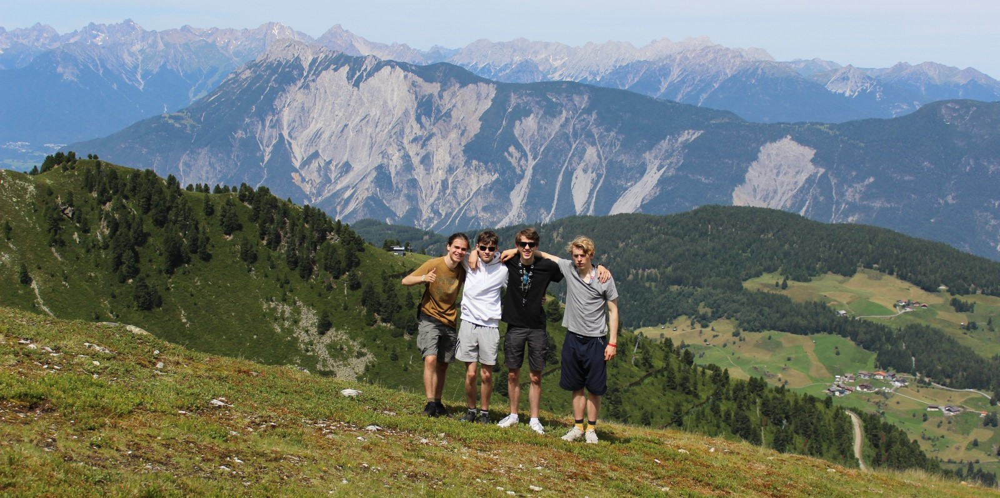

Blogpost2
Een Zomerse Ontdekkingsreis in de Oostenrijkse Alpen: Vier Vrienden op Avontuur

In de fonkelende zomerzon besloten vier vrienden de alledaagse sleur
te doorbreken en kozen ze voor een onvergetelijk avontuur in de
majestueuze Oostenrijkse Alpen. Gewapend met een flinke dosis lef en
enthousiasme begaven ze zich op een reis die hun vriendschap
verdiepte en hun harten vulde met onvergetelijke momenten.
De opwinding begon met een adembenemende afdaling van de berg,
stuiterend over kronkelende paden op gehuurde mountainbikes. De wind
suisde langs hun gezichten terwijl ze omringd werden door weelderige
bossen en indrukwekkende berglandschappen. De bergafdaling was niet
alleen een sportieve uitdaging maar ook een viering van de
overweldigende natuur om hen heen.
Na de bergachtige actie dook het viertal in een dag vol spetterend
plezier in een sprookjesachtig waterpark. Glijbanen die naar beneden
kletterden als bergstromen, verfrissende zwembaden omringd door
groene heuvels, en een sfeer van lachende gezichten vulden de dag
met uitgelaten vreugde. Het waterpark werd niet alleen een bron van
verfrissing maar ook van gedeelde lachbuien en watergevechten die de
vriendschap versterkten.
De volgende etappe van hun avontuur bracht hen naar nieuwe hoogten
terwijl ze een bergwandeling ondernamen. De geur van frisse
berglucht vulde hun longen terwijl ze langzaam de berg beklommen.
Eenmaal op de top werden ze beloond met een adembenemend uitzicht op
besneeuwde bergtoppen en weelderige valleien. De wandeling was niet
alleen een fysieke uitdaging maar ook een gelegenheid om de
sereniteit van de natuur te omarmen en samen herinneringen te smeden
die eeuwig zouden blijven.
Terwijl de reis ten einde liep, beseften de vrienden dat deze
zomerse escapade niet slechts een vakantie was, maar eerder een
avontuur dat niet alleen bergen trotseerde, maar ook de grenzen van
hun eigen comfortzones verlegde. Wat begon als een zoektocht naar
opwinding, eindigde als een viering van avontuurlijke vriendschap en
gedeelde ervaringen die hen voor altijd met elkaar zou verbinden.
Deze zomerse reis naar de Oostenrijkse Alpen werd niet alleen een
hoofdstuk in hun gezamenlijke geschiedenis, maar ook een bron van
glimlachen en warme herinneringen die ze voor altijd zouden
koesteren.